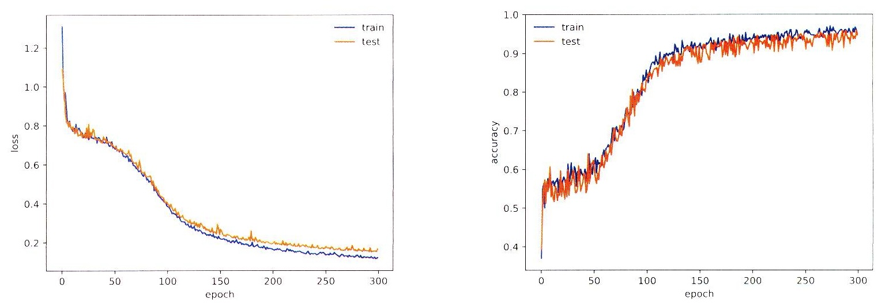

50단계 미니배치를 뽑아주는 DataLoader
이전 단계에서는 Dataset 클래스를 만들어서 통일된 인터페이스로 데이터셋을 다룰 수 있게 하였습니다. 이번 단계에서는 Dataset 클래스에서 미니배치를 뽑아주는 DataLoader 클래스를 구현합니다. DataLoader는 미니배치 생성과 데이터셋 뒤섞기 등의 기능을 제공하여 사용자가 작성해야 할 학습 코드가 더 간단해집니다. 이번 단계에서는 우선 ‘반복자’가 무엇인지 알아보고 이어서 DataLoader 클래스를 구현하는 흐름으로 진행하겠습니다.
50.1 반복자란
반복자(iterator)는 이름에서 알 수 있듯이 원소를 반복하여 꺼내줍니다. 그리고 파이썬의 반복자는 리스트나 튜플 등 여러 원소를 담고 있는 데이터 타입으로부터 데이터를 순차적으로 추출하는 기능을 제공합니다. 구체적인 예를 보시죠.
>>> t = [1, 2, 3]
>>> x = iter(t)
>>> next(x)
>>> next(x)
>>> next(x)
>>> next(x)
Traceback (most recent call last):
File "<stdin>", line 1, in <module>
StopIteration
리스트를 반복자로 변환하려면 iter 함수를 사용합니다. 이 코드에서는 리스트 t에서 x라는 반복자를 만들었습니다. 그런 다음 반복자에서 데이터를 순서대로 추출하기 위해 next 함수를 사용합니다. 앞의 예에서 next 함수가 실행될 때마다 리스트의 원소가 차례대로 꺼내지는 것을 확인할 수 있습니다. 또한 네 번째 실행에서는 원소가 더는 존재하지 않기 때문에 StopIteration 예외가 발생했습니다.
NOTE
for문에서 리스트의 원소를 꺼낼 때 내부적으로(사용자에게 보이지 않는 곳에서) 반복자가 이용됩니다. 예를 들어t = [1, 2, 3]일 때for x in t:x를 실행하면 리스트t가 내부적으로 반복자로 변환됩니다.
파이썬에서는 반복자를 직접 만들 수도 있습니다. 예를 들어 다음 코드는 고유한 반복자를 만들어줍니다.
class MyIterator:
def __init__(self, max_cnt):
self.max_cnt = max_cnt
self.cnt = 0
def __iter__(self):
return self
def __next__(self):
if self.cnt == self.max_cnt:
raise StopIteration()
self.cnt += 1
return self.cnt
보다시피 MyIterator라는 클래스를 구현했습니다. 클래스를 파이썬 반복자로 사용하려면 __iter__ 특수 메서드를 구현하고 자기 자신(self)을 반환하도록 합니다. 그리고 __next__ 특수 메서드에서는 다음 원소를 반환하도록 구현합니다. 만약 반환할 원소가 없다면 raise StopIteration()을 수행합니다. 이것으로 MyIterator 인스턴스를 반복자로 사용할 수 있습니다. 실제로 사용해보겠습니다.
obj = MyIterator(5)
for x in obj:
print(x)
실행 결과
이처럼 for x in obj: 구문을 사용하여 원소를 꺼낼 수 있습니다. 다음으로 반복자 구조를 이용하여 미니배치를 뽑아주는 DataLoader 클래스를 구현하겠습니다. 기본적으로 DataLoader는 주어진 데이터셋의 첫 데이터부터 차례로 꺼내주지만, 필요에 따라 뒤섞을 수도 있습니다. 다음이 DataLoader의 코드입니다.
dezero/dataloaders.py
import math
import random
import numpy as np
class DataLoader:
def __init__(self, dataset, batch_size, shuffle=True):
self.dataset = dataset
self.batch_size = batch_size
self.shuffle = shuffle
self.data_size = len(dataset)
self.max_iter = math.ceil(self.data_size / batch_size)
self.reset()
def reset(self):
self.iteration = 0 # 반복 횟수 초기화
if self.shuffle:
self.index = np.random.permutation(len(self.dataset)) # 데이터 뒤섞기
else:
self.index = np.arange(len(self.dataset))
def __iter__(self):
return self
def __next__(self):
if self.iteration >= self.max_iter:
self.reset()
raise StopIteration
i, batch_size = self.iteration, self.batch_size
batch_index = self.index[i * batch_size:(i + 1) * batch_size]
batch = [self.dataset[i] for i in batch_index]
x = np.array([example[0] for example in batch])
t = np.array([example[1] for example in batch])
self.iteration += 1
return x, t
def next(self):
return self.__next__()
초기화 메서드는 다음 인수를 받습니다.
dataset:Dataset인터페이스를 만족하는 인스턴스*batch_size: 배치 크기shuffle: 에포크별로 데이터셋을 뒤섞을지 여부
초기화 코드는 인수를 인스턴스 변수로 저장한 후 reset 메서드를 부릅니다. reset 메서드에서는 인스턴스 변수의 반복 횟수를 0으로 설정하고 필요에 따라 데이터의 인덱스를 뒤섞습니다.
__next__ 메서드는 미니배치를 꺼내 ndarray 인스턴스로 변환합니다. 지금까지 사용해온 코드와 똑같으니 설명은 생략하겠습니다.
CAUTION
dezero/dataloaders.py의DataLoader클래스는 데이터를 GPU로 전송하는 로직도 포함하지만 지면에서는 생략했습니다. GPU 대응은 52단계에서 진행합니다.
마지막으로 dezero/__init__.py에 from dezero.dataloaders import DataLoader라는 임포트문을 추가합니다. 이를 통해 사용자는 from dezero import DataLoader 구문을 사용하여 DataLoader를 임포트할 수 있습니다(from dezero.dataloaders import DataLoader처럼 전체를 명시할 필요는 없습니다).
* ‘Dataset 인터페이스를 만족하는 인스턴스’란 __getitem__과 __len__ 메서드를 구현한 클래스로부터 생성된 인스턴스를 말합니다.
50.2 DataLoader 사용하기
DataLoader 클래스를 사용하면 미니배치를 꺼내오는 일이 간단해집니다. 시험 삼아 신경망 학습을 가정하고 DataLoader를 사용해보겠습니다.
from dezero.datasets import Spiral
from dezero import DataLoader
batch_size = 10
max_epoch = 1
train_set = Spiral(train=True)
test_set = Spiral(train=False)
train_loader = DataLoader(train_set, batch_size)
test_loader = DataLoader(test_set, batch_size, shuffle=False)
for epoch in range(max_epoch):
for x, t in train_loader:
print(x.shape, t.shape) # x, t는 훈련 데이터
break
# 에포크 끝에서 테스트 데이터를 꺼낸다.
for x, t in test_loader:
print(x.shape, t.shape) # x, t는 테스트 데이터
break
실행 결과
(10, 2) (10,)
(10, 2) (10,)
훈련용과 테스트용 각각, 총 두 개의 DataLoader를 생성했습니다. 훈련용 DataLoader는 에포크별로 데이터를 뒤섞어야 하기 때문에 shuffle=True(기본값)로 설정합니다. 한편 테스트용 DataLoader는 정확도 평가에만 사용하므로 shuffle=False로 설정합니다. 이렇게만 해주면 이후 미니배치 추출과 데이터 뒤섞기는 DataLoader가 알아서 해줍니다.
다음은 DataLoader 클래스를 사용하여 스파이럴 데이터셋을 학습해볼 차례인데, 그전에 편의 기능을 하나 추가하겠습니다.
50.3 accuracy 함수 구현하기
이번 절에서는 인식 정확도를 평가해주는 accuracy 함수를 추가합니다. 코드는 다음과 같습니다.
dezero/functions.py
def accuracy(y, t):
y, t = as_variable(y), as_variable(t)
pred = y.data.argmax(axis=1).reshape(t.shape)
result = (pred == t.data)
acc = result.mean()
return Variable(as_array(acc))
accuracy 함수는 인수 y와 t를 받아서 ‘정답률’을 계산해줍니다. y는 신경망의 예측 결과이고 t는 정답 데이터입니다. 이 두 인수는 Variable 또는 ndarray 인스턴스여야 합니다.
내용을 보면 먼저 신경망의 예측 결과를 구해 pred에 저장합니다. 그러려면 예측 결과의 최대 인덱스를 찾아서 형상을 변경해야 합니다. 그리고 pred와 정답 데이터 t를 비교하면 결과는 True/False의 텐서(ndarray)가 됩니다. 이 텐서의 True 비율(평균)이 정답률에 해당합니다.
CAUTION
accuracy함수는Variable인스턴스를 반환합니다만 내부 계산은ndarray인스턴스를 사용해 수행합니다. 따라서accuracy함수로 수행한 계산은 미분할 수 없습니다.
또한 앞의 코드 마지막 줄에서는 as_array 함수를 사용하고 있습니다. 이는 acc, 즉 result.mean()이 반환하는 데이터의 형식이 np.float64나 np.float32이기 때문에 as_array 함수를 이용하여 ndarray 인스턴스로 변환한 것입니다(as_array 함수는 9단계에서 구현했습니다).
accuracy 함수를 사용하면 다음과 같이 정답률(인식 정확도)을 구할 수 있습니다.
import numpy as np
import dezero.functions as F
y = np.array([[0.2, 0.8, 0], [0.1, 0.9, 0], [0.8, 0.1, 0.1]])
t = np.array([1, 2, 0])
acc = F.accuracy(y, t)
print(acc)
실행 결과
variable(0.6666666666666666)
y에 담긴 3개의 샘플 데이터에 대해 신경망이 어떻게 예측하는지 보았습니다(3-클래스 분류). 정답 데이터인 t에는 각 샘플 데이터의 정답 인덱스가 부여되어 있습니다. 결과를 보니 인식 정확도는 0.66…으로, 정확하게 나왔군요(0번과 2번 샘플에서는 정답을 맞혔고, 1번 샘플에 대해서는 틀렸으니 인식 정확도는 2/3입니다).
50.4 스파이럴 데이터셋 학습 코드
DataLoader 클래스와 accuracy 함수를 사용하여 스파이럴 데이터셋을 학습해보겠습니다. 임포트문은 생략했습니다.
steps/step50.py
max_epoch = 300
batch_size = 30
hidden_size = 10
lr = 1.0
train_set = dezero.datasets.Spiral(train=True)
test_set = dezero.datasets.Spiral(train=False)
train_loader = DataLoader(train_set, batch_size)
test_loader = DataLoader(test_set, batch_size, shuffle=False)
model = MLP((hidden_size, 3))
optimizer = optimizers.SGD(lr).setup(model)
for epoch in range(max_epoch):
sum_loss, sum_acc = 0, 0
for x, t in train_loader: # ❶ 훈련용 미니배치 데이터
y = model(x)
loss = F.softmax_cross_entropy(y, t)
acc = F.accuracy(y, t) # ❷ 훈련 데이터의 인식 정확도
model.cleargrads()
loss.backward()
optimizer.update()
sum_loss += float(loss.data) * len(t)
sum_acc += float(acc.data) * len(t)
print('epoch: {}'.format(epoch+1))
print('train loss: {:.4f}, accuracy: {:.4f}'.format(
sum_loss / len(train_set), sum_acc / len(train_set)))
sum_loss, sum_acc = 0, 0
with dezero.no_grad(): # ❸ 기울기 불필요 모드
for x, t in test_loader: # ❹ 테스트용 미니배치 데이터
y = model(x)
loss = F.softmax_cross_entropy(y, t)
acc = F.accuracy(y, t) # ❺ 테스트 데이터의 인식 정확도
sum_loss += float(loss.data) * len(t)
sum_acc += float(acc.data) * len(t)
print('test loss: {:.4f}, accuracy: {:.4f}'.format(
sum_loss / len(test_set), sum_acc / len(test_set)))
먼저 ❶에서는 DataLoader를 사용해 미니배치를 꺼내고, ❷에서 accuracy 함수를 사용하여 인식 정확도를 계산합니다. 이어서 ❸에서는 에포크별로 테스트 데이터셋을 사용하여 훈련 결과를 평가합니다. 테스트 시에는 역전파가 필요 없으므로 with dezero.no_grad(): 블록 내부로 들어갑니다. 이렇게 함으로써 역전파 관련 처리와 자원 소모를 피할 수 있습니다(no_grad 함수는 18단계에서 도입했습니다).
❹에서는 테스트용 DataLoader에서 미니배치 데이터를 꺼내 평가합니다. 마지막으로 ❺에서 accuracy 함수를 사용하여 인식 정확도를 계산합니다.
[그림 50-1]은 이상의 코드를 실행하여 그래프로 그린 모습입니다.
그림 50-1 손실과 인식 정확도 추이

(좌측: 에포크 0~300에 따른 train/test 데이터셋의 손실(loss)이 1.2 근처에서 0.2 부근까지 꾸준히 하강하는 그래프. 우측: 인식 정확도(accuracy)가 0.5 부근에서 시작해 0.95 이상으로 우상향하는 그래프)
[그림 50-1]을 보면 에포크가 진행됨에 따라 손실(loss)이 낮아지고 인식 정확도(accuracy)는 상승하고 있습니다. 학습이 제대로 이루어지고 있다는 증거죠. 또한 훈련(train)과 테스트(test)의 차이가 작은데, 모델이 과대적합을 일으키지 않았다는 뜻입니다.
NOTE 과대적합(overfitting)은 특정 훈련 데이터에 지나치게 최적화된 상태를 말합니다. 따라서 새로운 데이터에서는 예측 정확도가 훨씬 떨어지는, 달리 표현하면 일반화되지 못한 상태를 뜻합니다. 신경망으로는 표현력이 높은 모델을 만들 수 있기 때문에 과대적합이 흔히 일어납니다.
여기까지가 이번 단계의 내용입니다. 다음 단계에서는 스파이럴 데이터셋 대신 MNIST 데이터셋을 사용합니다.